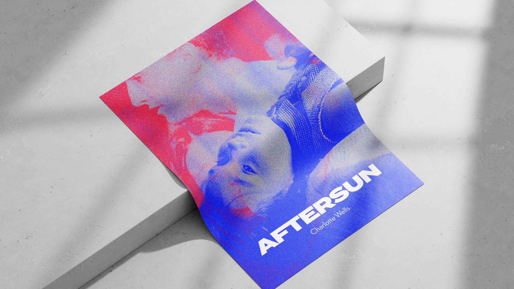

Après avoir vu Aftersun de Charlotte Wells, un film que j’apprécie beaucoup, j’ai voulu recréer des affiches qui traduisent les émotions de Sophie. En effet, dans Aftersun, nous vivons de manière assez abstraite et poétique les souvenirs de vacances de Sophie et son père. Quelques ellipses nous font comprendre que désormais Sophie est adulte, et son père ne semble plus être dans sa vie. C’est le sentiment «doux-amer» procuré par la nostalgie, que j’ai voulu exprimer. Quand on se remémore des souvenirs qui ont été joyeux, mais qui avec le temps sont emprunts de tristesse, dans son cas, car elle comprend certaines choses sur son père avec du recul. C’est aussi pour faire un clin d’oeil avec le traité de l’image du film, que j’ai utilisé le grain.
